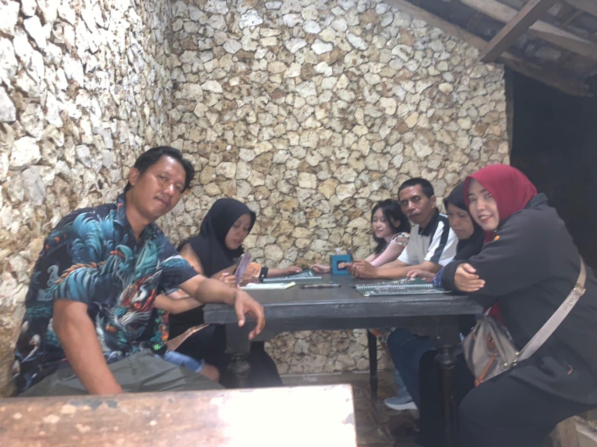

✦ “Cahaya lembut yang tak pernah pudar”
˙ . ꒷ 🍰 . 𖦹˙—
Album Keluarga dipenuhi dengan kehangatan rumah — foto-foto yang menceritakan kisah kebersamaan, tawa, dan cinta yang tak pernah pudar. Dalam album ini, ada momen-momen bersama orang tuaku, yang selalu menjadi dukungan terbesar dan sumber kekuatanku, serta bersama kakek-nenekku, yang senyum lembutnya selalu membawa kenyamanan. Setiap foto menyimpan sebuah kenangan — berkumpul bersama keluarga, perayaan kecil, atau bahkan sore-sore sederhana yang dihabiskan di rumah. Ada kelembutan di setiap bingkai, menjadi pengingat bahwa tidak peduli seberapa jauh kita pergi, selalu ada tempat yang terasa seperti rumah. Album ini bukan sekadar kumpulan foto; ini adalah kumpulan cinta, kenyamanan, dan orang-orang yang membuat hidup menjadi bermakna.
|  | ⋆｡𖦹 ˚ 𓇼 ˚｡⋆
TFoto ini diambil saat berkumpul bersama keluarga di Pondok Indah, bersama pihak keluarga ibuku. Hari itu terasa hangat dan penuh tawa. Kami duduk mengelilingi meja besar, berbagi cerita, tertawa karena hal-hal kecil, dan menikmati setiap hidangan yang disajikan. Ruangan dipenuhi dengan kebahagiaan yang istimewa — bukan hanya karena makanan yang lezat, tetapi juga karena percakapan dan tawa yang membuat semuanya terasa hidup. Keluarga ibuku memiliki cara tersendiri untuk membuat setiap momen terasa nyaman dan penuh kasih. Nenek tersenyum lembut saat melihat kami saling menggoda satu sama lain, sementara ibu dan saudara-saudaranya mengenang cerita masa kecil, membuat semua orang tertawa. Itu sederhana, namun terasa begitu berharga — kebersamaan yang mengingatkan betapa indahnya keluarga. Setiap kali aku melihat foto ini, aku merasakan rindu yang lembut — rindu akan kehangatan, tawa, dan momen ketika semuanya terasa tenang dan sempurna. Bagi ku, hari itu bukan sekadar makan bersama keluarga; itu adalah kenangan yang menangkap cinta dalam bentuk paling murni — dikelilingi oleh orang-orang yang membuat hidup terasa seperti rumah. 🕊️ |
 |
‧₊˚🖇️✩ ₊˚🎧⊹♡
Foto ini diambil pada hari kedua Idul Fitri, tepat setelah kami saling berpelukan dan saling memaafkan di ruang keluarga. Hari itu terasa begitu istimewa — bukan hanya karena suasana yang meriah, tetapi juga karena seluruh keluarga hadir. Kakek-nenek, paman, bibi, dan sepupu memenuhi rumah dengan tawa dan kehangatan. Meja makan dipenuhi hidangan lezat — opor ayam, sambal kentang pedas, ketupat, dan berbagai kue yang tertata rapi dalam toples kaca. Aroma masakan ibu berpadu dengan wangi dupa yang lembut, membungkus seluruh rumah dalam pelukan yang hangat. Setiap sudut rumah terasa hidup. Beberapa orang sibuk mengambil foto, ada yang bercanda sambil mencuri gigitan makanan, dan yang lain duduk tenang, tersenyum, menikmati momen. Meskipun tidak semua orang masuk dalam foto ini, cinta dan kehangatan hari itu tetap hidup jelas di dalam hatiku. Setiap senyum dan setiap gestur kecil berbicara dalam bahasa yang hanya bisa dimengerti oleh keluarga. Kadang, ketika melihat kembali foto ini, aku menyadari betapa cepat waktu berlalu. Anak-anak yang dulu berlarian kini mulai tumbuh, dan orang-orang tua yang dulu menyiapkan segalanya kini melihat kami dengan senyum lembut. Namun, meskipun banyak yang berubah, rasa kebersamaan tetap sama — lembut, nyata, dan penuh cinta. Foto ini lebih dari sekadar kenangan — ini adalah pengingat tentang arti sejati keluarga. Kisah tentang rumah, tawa, dan cinta yang tak pernah pudar oleh waktu. Hari itu mungkin telah berlalu, tetapi kehangatannya akan selalu tersimpan dalam hati kami. 🌿 |
{kind=link}